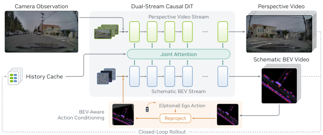

A driving instructor watching through the windshield can lose track of the car behind a truck. Give them a live overhead map with every car as a box, and who is cutting in becomes obvious. BirdDreams draws that map while it draws the video, and lets each picture check the other.
앞유리로만 보는 운전 강사는 트럭 뒤에 숨은 차를 놓치기 쉽다. 모든 차를 상자로 그린 실시간 조감도를 주면 누가 끼어드는지 바로 보인다. BirdDreams는 영상을 그리면서 이 지도도 함께 그리고, 두 그림이 서로를 확인하게 한다.
How it works: two streams, one rollout작동 방식은 두 스트림, 하나의 롤아웃
The BEV turns traffic into simple shapes at a fixed metric scale, so the model learns motion without fighting lighting or occlusion.
BEV는 교통 상황을 고정된 미터 축척의 단순한 도형으로 바꾼다. 그래서 모델은 조명이나 가림과 싸우지 않고 움직임을 배운다.

- Pair the videos.영상 짝짓기.For about 670 hours of driving, render a 69.3 m square BEV from map and box annotations, synced with the front camera.약 670시간 분량의 주행 데이터에서 지도와 박스 라벨로 69.3 m 정사각형 BEV를 그리고 전방 카메라와 맞춘다.
- Noise each stream separately.스트림별 노이즈.Diffusion Forcing samples noise per chunk and per stream, so one view often guides the other. Resampling Forcing then exposes the model to its own rollout errors.Diffusion Forcing으로 청크마다, 스트림마다 노이즈를 따로 뽑아 한쪽 시점이 다른 쪽을 이끄는 경우를 자주 만든다. 그다음 Resampling Forcing으로 자기 롤아웃의 오류에 익숙해지게 한다.
- Steer through the map.지도로 조종.Shift and rotate the last BEV frame along the input trajectory and feed it as a soft condition. Only the ego moves in it, so the model must predict how others respond.마지막 BEV 프레임을 입력 궤적대로 옮기고 돌려 약한 조건으로 넣는다. 그 안에서는 내 차만 움직이므로, 다른 차의 반응은 모델이 예측해야 한다.
Key point: the map makes steering precise핵심은 지도가 조종을 정확하게 만든다는 것
Steering through a metric BEV beats steering through camera-ray embeddings. The ego car stays much closer to the requested path.
미터 단위 BEV로 조종하는 편이 카메라 광선 임베딩으로 조종하는 것보다 낫다. 내 차가 요청한 경로에 훨씬 가깝게 달린다.
Results: traffic that reacts결과는 반응하는 교통
In counterfactual drives with the same road map, raters flag impossible motion three times less often for BirdDreams.
같은 도로 지도로 기록과 다르게 운전시켰을 때, 평가자가 불가능한 움직임을 지적한 비율은 BirdDreams 쪽이 3분의 1이다.
| Measure | OmniDreams (HDMap) | BirdDreams (HDMap) |
|---|---|---|
| Preferred | 24 | 57 |
| Impossible motion | 27 | 9 |
| Unnatural driving | 24 | 6 |
| No reaction to others | 19 | 11 |
For world models, a cheap structured side view can teach dynamics that pixels hide. Predicting the layout instead of taking it as input is what lets other agents react.월드 모델에서는 값싼 구조화 시점 하나가 픽셀이 숨기는 동역학을 가르쳐 줄 수 있다. 배치를 입력으로 받지 않고 직접 예측하기 때문에 다른 차들이 반응할 수 있다.
Reactivity is judged by examples and a 25-person study, with road geometry given. Training needs map and 3D box labels, only the front camera is modeled, and no generation speed is reported.반응성은 사례와 25명 평가로만 판단했고, 이때 도로 형상은 주어졌다. 학습에 지도와 3D 박스 라벨이 필요하고, 전방 카메라 하나만 다루며, 생성 속도는 보고하지 않는다.